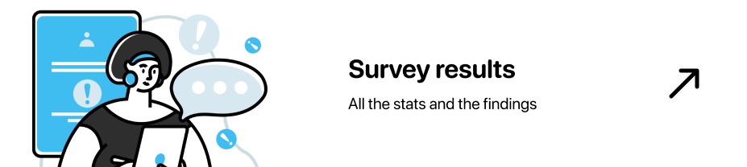

Overview
-

Problem
Mualim needed an AI tutor for kids in Saudi Arabia that felt natural, not bolted on. Two very different people had to say yes to it: the child using it, and the parent deciding whether to allow it. A child's enthusiasm meant nothing if the parent wouldn't approve, so I started by working out what each side needed in order to trust it.
-

Central Question
How do you design a single interface that feels safe, engaging, and genuinely useful to a child, while feeling transparent and trustworthy to the parent watching over them?
-

Result
I shipped an AI tutor that works for both audiences, from the first session through daily use, across web and mobile. Parents get one dashboard with plain-language progress, and children get a playful interface that rewards effort.
The full story
I was brought in as product design consultant, owning the work end to end: research, strategy, prototyping, and shipping. Mualim needed a tutor that made AI-driven learning approachable from the very first session, for kids as young as five.
Project challenges
For parents
For students
Part one
Designing for parents
Before a child ever opens the app, a parent has to decide the AI tutor is worth letting them use in the first place. This half of the work is about earning that trust: research, personas, and a core feature set built around making Mualim feel like one coherent platform a parent can rely on, not a black box.
Research and survey results
Because two people had to trust the product, I researched both sides. For the child, I looked at what makes an AI tutor feel safe, engaging, and genuinely useful. For the parent or guardian, I looked at what makes it feel trustworthy and transparent. That split informed every decision that followed.
I ran a parent-facing survey alongside short usability sessions with kids to learn what would make an AI tutor feel safe enough to adopt. Parents trusted what they could see in plain language, and they were frustrated by managing account, billing, and progress in separate places.
78%
Of parents said visible, plain-language progress tracking was their top trust factor
52%
Of parents said managing account, billing, and progress in separate places was their biggest frustration

Making an all-in-one platform
The survey's second finding pointed to the fix. Parents didn't just want visibility into their child's learning. They wanted one place to manage all of it, instead of juggling a separate app or channel for progress, communication, and billing. So I put everything a parent needs behind one dashboard, not scattered across settings menus and support emails.
Core features
The parent dashboard is the anchor of that all-in-one platform. Everything below builds outward from it.
Multi-child dashboard
A parent with more than one child on Mualim sees all of them from a single screen, instead of switching accounts or apps to check on each one.
Milestone & concern alerts
Parents are notified only when it actually matters, a milestone reached, or a topic their child is visibly stuck on, instead of a constant stream of activity notifications.
Manage plans & settings
Subscription, learning goals, and account controls all live in the same dashboard as progress. No separate billing portal or support ticket required.
Part two
Designing for students
Once a parent trusts the platform enough to let their child in, the goals flip entirely, from transparency and control to attention and encouragement. This half covers the actual learning experience: the interface a child spends real time in.
AI learning made easy
Kids didn't need to memorize concepts. They needed to learn, unlearn, and relearn, so I built the lessons around iteration and goal-based learning instead of one-shot correctness. A wrong answer became a step in the process, not a failure state.
Positive reinforcement
A wrong answer that feels like a dead end makes a child stop trying. So every attempted answer gets an immediate, encouraging reaction before moving on, with no waiting and no doubt about whether it "counted." I wanted to reward effort and attempts, not just correct answers, so a wrong guess still feels like progress.
Final outcome
The shipped product answered the question I started with. One interface now serves a child who needs to stay engaged and a parent who needs to trust it, two audiences with very different relationships to the same learning experience.